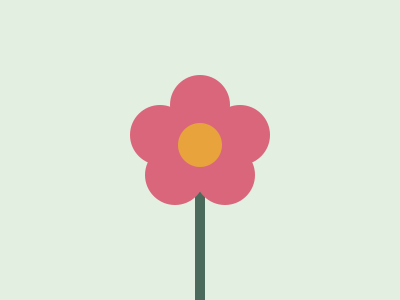

Why We Like Photography
Taking pictures makes you notice things you would normally walk past. It is also a cheap hobby to start, and you get better every time you go out and shoot.
Learn more at National Geographic Photography.
A beginner's guide to photography
Photography is a hobby anyone can start with just a phone. This site covers the basics: what gear you need, how to take better pictures, and what to shoot.

Mountains, lakes and sunsets.

Close-ups of small things like flowers and bugs.
Everyday life and city scenes.
Taking pictures makes you notice things you would normally walk past. It is also a cheap hobby to start, and you get better every time you go out and shoot.
Learn more at National Geographic Photography.